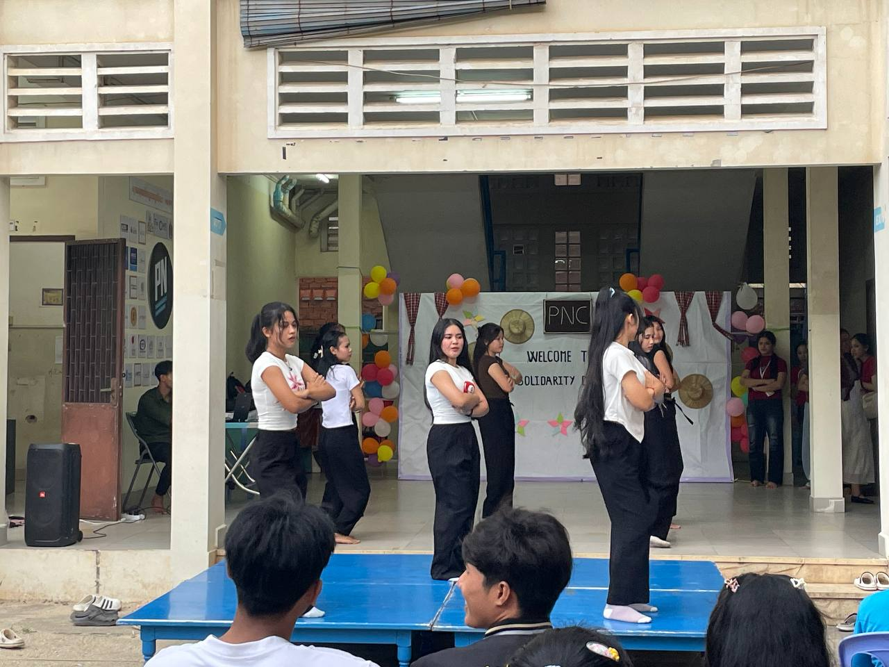
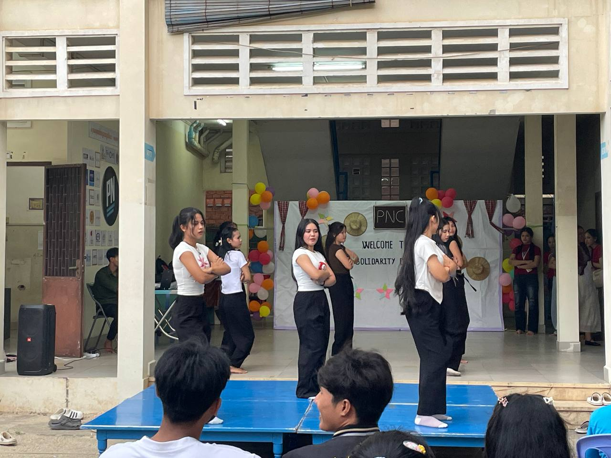

Welcome to PNC Cambodia
Passerelles Numériques Cambodia was the first project to be launched in 2005, in Phnom Penh. PNC offers two IT training programs in System and Network Administration (SNA) and Web Programming (WEP), based on a holistic educative approach including technical and soft skills, and a personal development program.


 
